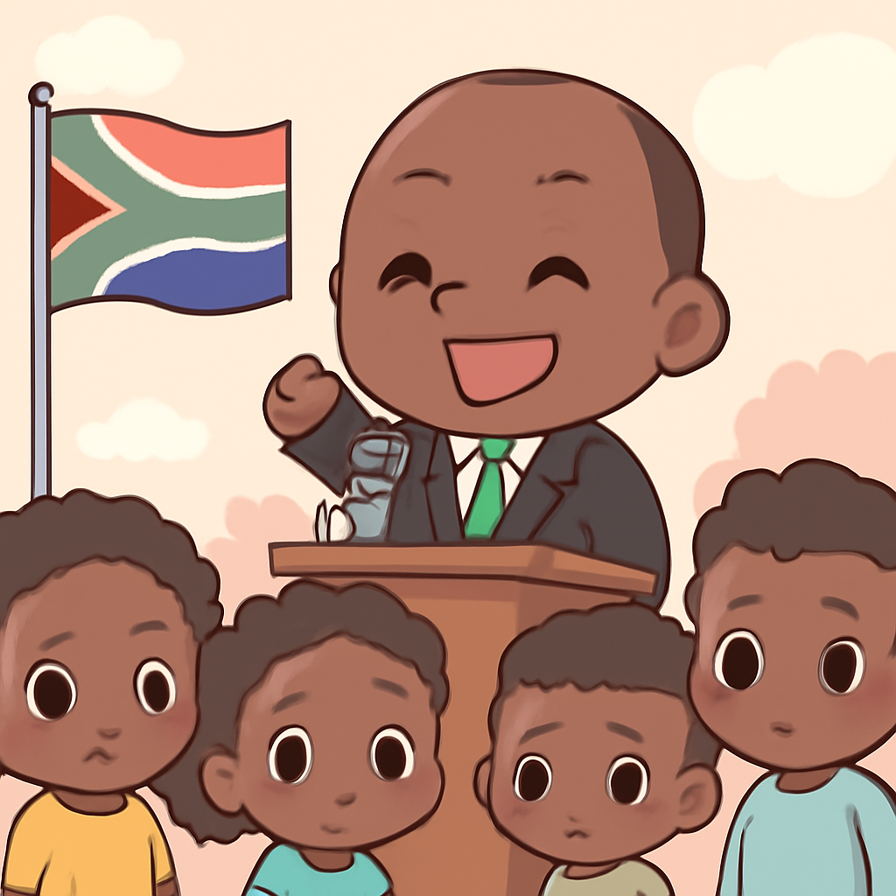
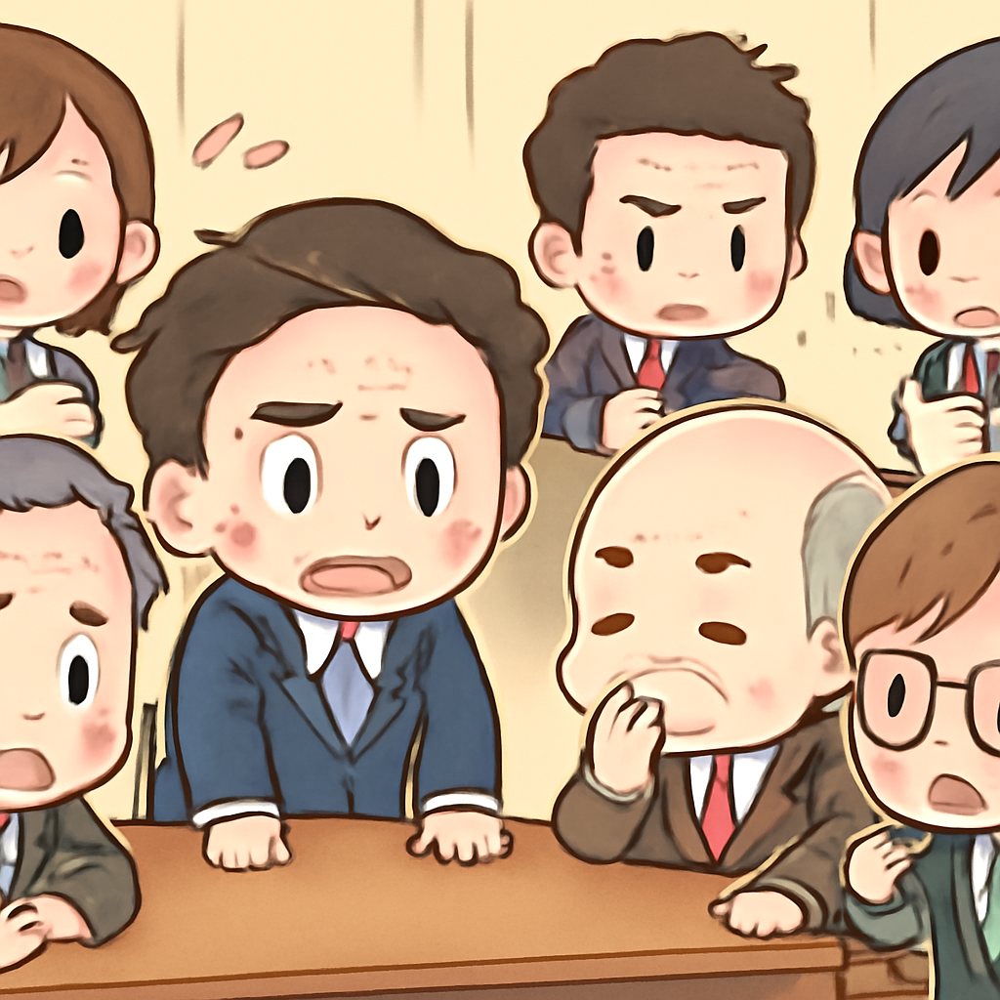
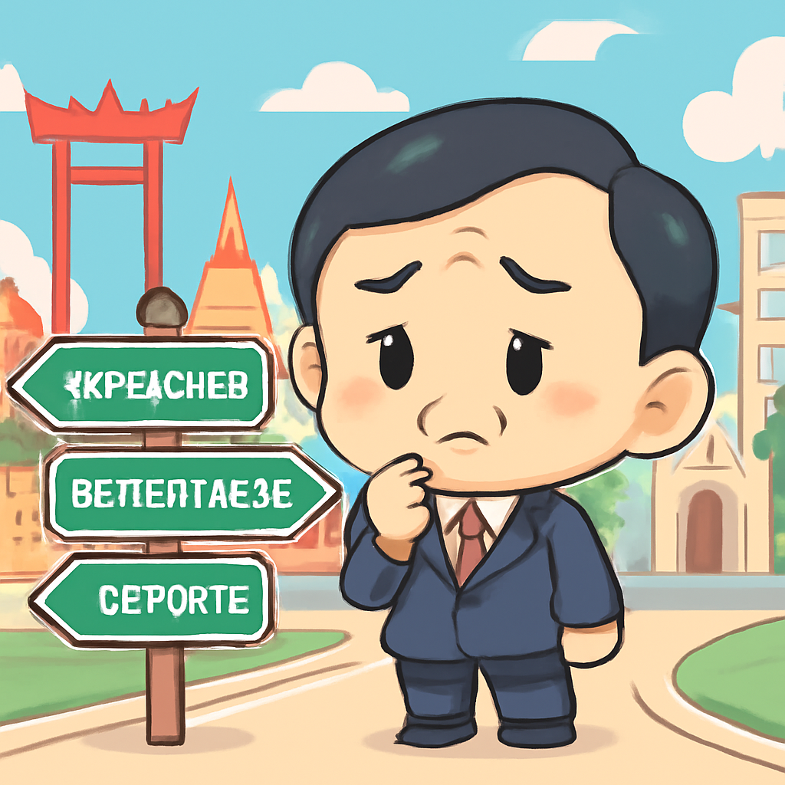

其一 · 南非約翰內斯堡 · 總統拒絕下台
南非總統拉馬福薩面對彈劾要求，堅持不辭職。

在南非約翰內斯堡，總統西里爾·拉馬福薩（Cyril Ramaphosa）在面對彈劾要求時，於周一晚上表示不會辭職。這一決定引起了廣泛關注，因為他面臨的政治壓力正在加大。這不僅影響南非的政治穩定，也可能影響經濟及社會發展。看來，他的政治生涯就像一部劇，永遠不會在高潮中結束。
🔗 原始新聞 ↗
2026-05-12 · 以古觀今，以笑抗愁
南非總統拉馬福薩面對彈劾要求，堅持不辭職。

在南非約翰內斯堡，總統西里爾·拉馬福薩（Cyril Ramaphosa）在面對彈劾要求時，於周一晚上表示不會辭職。這一決定引起了廣泛關注，因為他面臨的政治壓力正在加大。這不僅影響南非的政治穩定，也可能影響經濟及社會發展。看來，他的政治生涯就像一部劇，永遠不會在高潮中結束。
🔗 原始新聞 ↗
特朗普表示伊朗的停火協議正處於'巨大生命支持'中。
在美國華府，特朗普總統對伊朗的停火協議表示懷疑，稱其狀況不佳，並批評伊朗的回應不夠誠意。這一言論可能會影響即將召開的高層會議，並且使得局勢更加複雜。可見，國際關係就像一場棋局，特朗普似乎在下一盤大棋。
🔗 原始新聞 ↗
查德湖附近的漁民因空襲而面臨生死危機。
在尼日利亞查德湖，當地漁民的生活受到空襲影響，據報導大約40人可能喪生，或因為空襲而逃生不及溺水。這一事件突顯了當地的安全問題，也讓人擔心平民在衝突中的脆弱地位。希望當地能早日恢復平靜，讓漁民們能安心捕魚。
🔗 原始新聞 ↗
英國工黨內部出現辭職潮，施壓領導層。

在英國倫敦，工黨領袖基爾·斯塔默（Keir Starmer）最近面臨了前所未有的壓力，多位黨內高層宣布辭職。隨著黨內不滿情緒上升，這可能會導致他面臨領導挑戰。這對於即將到來的選舉無疑是一個不小的挑戰，政治如同一場舞台劇，隨時可能換角。
🔗 原始新聞 ↗
泰國前總理他信獲釋，未來計畫引人關注。

在泰國曼谷，前總理他信·西那瓦（Thaksin Shinawatra）出獄後，面對未來的選擇，將引起廣泛關注。雖然他在泰國政壇上長期受到爭議，但他依然擁有相當的影響力。他的下一步是否將改變當地的政治格局？我們拭目以待！
🔗 原始新聞 ↗